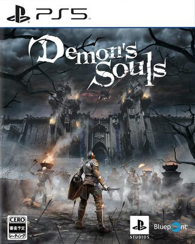

恶魔之魂：重制版 Demon's Souls
第一关大门口忍了6个小时还是被劝退了，反复死，地图路线、怪物分布都背得滚瓜烂熟了，武器都打烂了，结果还是没有解锁第二个篝火。游戏设计还是不错的，就是系统还是有些复杂了（黑白世界的设定都没有涉及到），但是装备耐久度的设定真的很没意义。所以最后还是视频通关了（油管主播FightinCowboy） =，= 只希望黑猴子可以带我入门魂系列了。
说过什么
2024-07-02 23:15:32
玩过 · 时间来自广播，短评来自标记页
第一关大门口忍了6个小时还是被劝退了，反复死，地图路线、怪物分布都背得滚瓜烂熟了，武器都打烂了，结果还是没有解锁第二个篝火。游戏设计还是不错的，就是系统还是有些复杂了（黑白世界的设定都没有涉及到），但是装备耐久度的设定真的很没意义。所以最后还是视频通关了（油管主播FightinCowboy） =，= 只希望黑猴子可以带我入门魂系列了。
2021-06-20 20:41:57
广播 · 在玩
How to play soul game? Waiting online, hurry up~
2020-11-01 09:30:32
广播 · 想玩
手残d就借游戏玩好了
最后一次看到是 2026-08-07T18:36:11+10:00 · 豆瓣原页